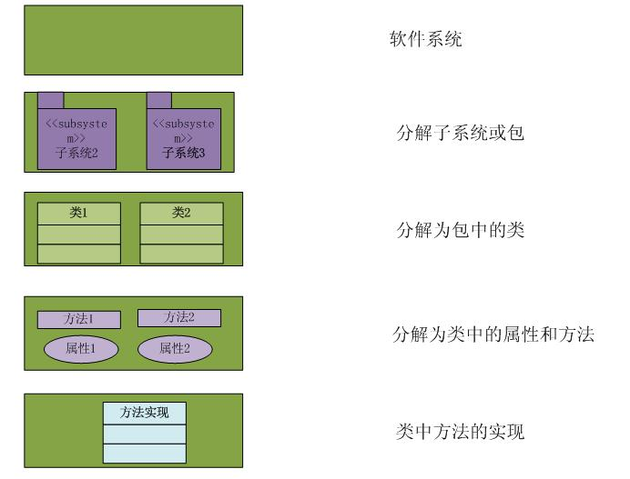

org-mode教程
目录
快捷键
- 章节/标题
S+Tab展开、折叠所有章节Tab对光标所在章节进行开展、折叠M+left/right升级/降级标题
- 列表
M-RET插入同级列表项M-S-RET插入有 checkbox 的同级列表项C-c C-c改变 checkbox 状态M-left/right改变列表层级关系M-up/down上下移动列表项
- 表格
C-c |通过输入打小的方式插入表格C-c C-c对齐表格Tab调到右边一个表格enter调到下方的表格M-up/down/left/right上下左右移动行（列）M-S-up/down/left/right向上下左右插入行（列）
- 链接
C-c C-x C-v直接预览图片
- TODO
C-c C-t变换 TODO 状态C-c / t以树的形式展示所有的 TODOC-c C-c改变 checkbox 状态C-c设置优先级（方括号里的 ABC）M-S-RET插入同级 TODO 标签
- 标签 Tags
C-c c-q为标题添加标签C-c / m生成带标签的树
- 时间
C-c .插入时间
- 代码块
C-c C-c对当前代码块求值
- 导出
C-c C-e选择相应的导出格式
Evil 快捷键
- 切换 TODO 状态: S-LEFT/RIGHT
- 切换 TODO 状态 : SPC-m-t
- 插入 deadline : SPC-m-d-d
- 插入 schedule : SPC-m-d-s SHEDULED:
- [#A] 插入 priority : SPC-m-p
- 打开 Org-agenda : SPC-o-a
- 标签搜索 : SPC-o-a-m
- 切换 checkbox 状态 : RET
- 设置标签 : SPC-m-q
- 插入 snippets : SPC-i-s
- 在当前 level 插入标题或列表 : M-RET
- 在子树后插入新标题 : C-RET
- 升级/降级标题 : M-h/l OR M-LEFT/RIGHT
- 升级/降级当前子树 : M-S-h/l OR M-S-LEFT/RIGHT
- 上/下移动子树/列表 : M-j/k
- 上/下移动列表，但不移动子树 : M-S-j/k
标题一
标题二
列表
- treerot
- branch1
- branch2
checkbox
[-]任务 1[33%][ ]子任务 1[X]子任务 2[ ]子任务 3
[ ]任务 2
表格
| Name | Phone | sub1 | sub2 | total |
|---|---|---|---|---|
| maple | 134… | 89 | 98 | 187 |
| wizard | 152… | 78 | 65 | 143 |
| hehe | 157… | 87 | 78 | 165 |
脚注
用1的方式插入脚注，而在最下面插入。这个标签是可以点击的。
链接
链接用于链接一些资源地址，如图片、文件、URL 等。链接的格式是：
[[链接地址][链接内容]]
如：
{kind=link}
若果去掉标签，则能直接显示图片：

直接显示的图片在 Emacs 里默认不显示，需按`C-c C-x C-v`才能显示，在输出成其他格式（html、pdf 等）后也能看到。
http://fuzihao.org/blog/2015/02/19/org-mode%E6%95%99%E7%A8%8B/
TODO
TODO 也是一类标题，因此也需要用`*`开头。
TODO 洗衣服
org-mode 兼有标题和列表的功能，也可以添加 checkbox 和完成进度，除此之外，还可以设计优先级。
TODO 任务 1
TODO 任务 2
TODO 总任务 [33%]
TODO 子任务 1
TODO 子任务 2 [0%]
[-]subsub1[1/2][X]subsub2[ ]subsbu3
DONE 一已完成的任务
标签 Tags
章标题 work learn
节标题 1 fly plane
节标题 2 car run
时间
TODO 洗衣服
特殊文本格式
bold
italic
underlined
verbatim
code
strike-through
富文本导出
org-mode 可以在导出时加入一些说明符号，来制定导出选项，常用导出符号如下：
设置标题和目录：
#+TITILE: This is the title of document #+OPTIONS: toc:2 (only to two levels in TOC) #+OPTIONS: toc:nil (no TOC at all)
添加引用：
Erverthing should be made as simple as possbile, but not any simpler – Albert Einstein
设置居中：
Everything should be made as simple as possbile, but no any simpler
设置样例（在这里面的内容将会直接输出，不会被转义）：
这里面的字符不会被转义
注释，这些内容不会被导出：
注释的用法
org-mode 支持直接输入 LaTex，在导出后 LaTex 能被正确解释。
插入源代码
org-mode 除了可以直接插入源代码之外，可以直接求出运行结果。在使用之前，需要在.emacs 配置文件中设置加载的运行语言：
(org-babel-do-load-languages 'org-babel-load-languages '( (sh . t) (python . t) (R . t) (ruby . t) (ditaa . t) (dot . t) (octave . t) (sqlite . t) (perl . t) (C . t) ))
设置好之后输入：
(+ 1 2 3 4)
降光标移动到代码块内，按 C-c C-c ，org-mode 就会自动计算结果：
10
a = 1+1 print(a)
int a=1; int b=1; printf("%d\n", a+b);
导出
org-mode 导出 pdf 需要 LaTeX 支持，导出 html 默认没有任何样式，org-mode 为每个模块都添加了 css 的标签，可以降现成的 css 文件直接加入，便能得道一个好看的输出样式了：
在头部加入
#+HTML_HEAD: <link rel="stylesheet" type="text/css" href="style1.css" />
该代码加载我们的 css。